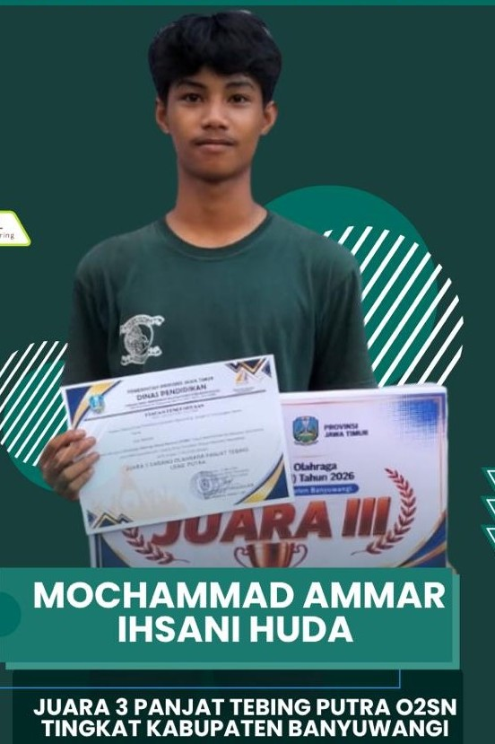
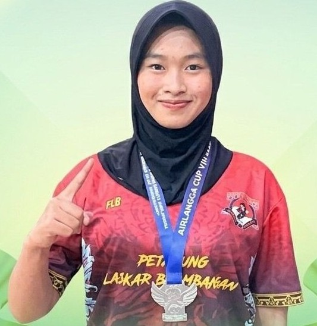

Juara 22nd Place

Cheysha - Taekwondo Indonesia Antar Pelajar Jatim 2025
Kelas PutriGirls Class
25–28 September 2025, GOR Ken Arok, Malang
Juara 33rd Place

Griselda Forto - Taekwondo Indonesia Antar Pelajar Jatim 2025
Kelas PutriGirls Class
25–28 September 2025, GOR Ken Arok, Malang
Juara 11st Place

Kejuaraan Provinsi I Woodball Jawa Timur 2026
Tim Woodball SMAN 1 CluringSMAN 1 Cluring Woodball Team
6 April 2026
Juara 33rd Place

Mobile Legend Championship 2026
Tim E-Sports SMAN 1 CluringSMAN 1 Cluring E-Sports Team
2026, Dinas Pemuda dan Olahraga
Juara 11st Place

FLS2N: Lomba Tari Kreasi
Tim Tari Sahwitta: Denisa & SaraswatiSahwitta Dance Team
27 April 2026, FLS2N Tingkat Kabupaten
Juara 33rd Place

FLS2N: Lomba Menulis Cerpen
Kirana Ayu MaharaniKirana Ayu Maharani
27 April 2026, FLS2N Tingkat Kabupaten
Juara 33rd Place

FLS2N: Lomba Jurnalistik
Nadine Damara C.L.Nadine Damara C.L.
27 April 2026, FLS2N Tingkat Kabupaten
Juara 33rd Place

Kejuaraan Taekwondo Tingkat Kabupaten Banyuwangi 2026
Nadifa Riska (X3) - Gyeorugi Junior U-55 PutriNadifa Riska (X3) - Gyeorugi Junior U-55 Girls
10 Mei 2026
Juara 33rd Place

O2SN: Bulutangkis Tunggal Putra
Rafi Achmad SukristiantoRafi Achmad Sukristianto
11 Mei 2026, O2SN Tingkat Kabupaten
Juara 33rd Place
O2SN: Panjat Tebing Putra
Mochammad Ammar Ihsani HudaMochammad Ammar Ihsani Huda
11 Mei 2026, O2SN Tingkat Kabupaten

Juara 22nd Place
Turnamen Pencak Silat
Ramadaningtyas PutriRamadaningtyas Putri
12 Juli 2026

Juara 2 & 32nd & 3rd Place

Kompetisi Tingkat Kabupaten Banyuwangi 2026
Hapsari Putri (XII-9) & Aura Distifa (XII-9)Hapsari Putri (XII-9) & Aura Distifa (XII-9)
24 Juli 2026